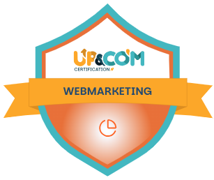
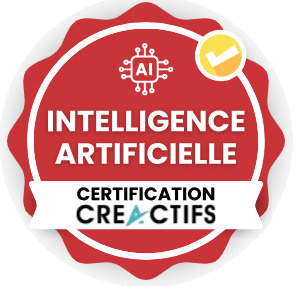

Du temps récupéré
Moins de ressaisies, de recherches d’informations et de tâches répétitives à traiter manuellement.
Moins de tâches manuelles. Des demandes mieux suivies. Une présence digitale qui soutient réellement votre développement.
Automatisations, assistants IA et systèmes digitaux sur mesure
Expertise sectorielle : Médecine & chirurgie esthétiques · Spas & hôtellerie · Thalasso & thermal · Instituts & indépendantes
Premier rendez-vous gratuit et sans engagement.
CE QUE CELA CHANGE
AesthéIA intervient là où votre organisation perd du temps, où vos demandes perdent en suivi et où votre visibilité peut mieux soutenir votre activité.
Moins de ressaisies, de recherches d’informations et de tâches répétitives à traiter manuellement.
Les demandes, devis et relances sont plus faciles à identifier, à prioriser et à traiter au bon moment.
Votre site, votre présence locale et vos contenus sont structurés pour être mieux compris et faciliter la prise de contact.
Les informations utiles sont regroupées et les étapes clés deviennent plus simples à suivre pour vous comme pour votre équipe.
Secteurs
Choisissez votre secteur pour découvrir les enjeux, systèmes et résultats adaptés à votre activité.

AesthéIA aide les cabinets à structurer leur présence digitale, mieux organiser les demandes de consultation et fluidifier les tâches non médicales liées au suivi patient, dans le respect de la confidentialité et du contrôle humain.
Découvrir notre expertise
AesthéIA aide les spas à mieux organiser leurs campagnes saisonnières, leurs contenus, leurs demandes de réservation et le suivi des clients, tout en facilitant la circulation des informations entre les équipes.
Découvrir notre expertise
AesthéIA aide les établissements à rendre leurs offres plus lisibles, anticiper leurs temps forts, centraliser leurs informations et simplifier le suivi des demandes sur des parcours souvent complexes.
Découvrir notre expertise
AesthéIA aide les instituts à mieux organiser leur communication, leurs demandes, leurs relances et certaines tâches administratives afin de réduire la charge quotidienne.
Découvrir notre expertiseCONCRÈTEMENT
Un système AesthéIA peut relier les étapes qui, aujourd’hui, dépendent encore de manipulations manuelles ou de la mémoire de l’équipe.
Depuis votre site, un formulaire, un e-mail ou un autre canal de contact.
Les éléments utiles sont regroupés dans un suivi clair au lieu de rester dispersés.
Qualification, priorité, rappel ou brouillon peuvent être préparés selon vos règles.
Les actions sensibles restent soumises à une validation humaine lorsqu’elle est nécessaire.
Résultat recherché : moins de demandes oubliées, un suivi plus régulier et une équipe qui sait plus facilement quoi traiter en priorité.
Les solutions AesthéIA
Documents, rappels, transferts d’informations, préparation de réponses ou tâches répétitives : les étapes utiles sont reliées et assistées.
Ce que cela apporte : moins de manipulations, d’oublis et de temps consacré aux tâches à faible valeur.
Les demandes entrantes peuvent être centralisées, qualifiées et suivies avec des prochaines actions clairement identifiées.
Ce que cela apporte : un suivi commercial plus régulier et moins d’opportunités laissées sans suite.
Site, fiche Google, pages prestations, contenus et parcours de contact sont pensés ensemble pour rendre votre offre plus claire et plus facile à trouver.
Ce que cela apporte : une présence digitale plus cohérente, mieux comprise par les moteurs de recherche et orientée vers la prise de contact.
Les données importantes peuvent être rassemblées dans des tableaux de suivi adaptés à vos objectifs : demandes, rendez-vous, devis, conversions ou activité.
Ce que cela apporte : une lecture plus simple de ce qui fonctionne et des priorités à ajuster.
Pourquoi AesthéIA
L’objectif n’est pas d’ajouter des outils. Il est de corriger les points de friction qui freinent votre organisation, votre suivi ou votre visibilité.
Plus de vingt ans de terrain dans l’esthétique, le spa et la médecine esthétique pour comprendre les contraintes avant de proposer une solution.
Le parcours prospect, la présence digitale et les processus internes sont regardés comme un ensemble, pas comme des sujets séparés.
Les outils déjà en place sont conservés lorsqu’ils restent pertinents, afin d’éviter les changements inutiles.
Les messages, décisions ou actions sensibles peuvent conserver une étape de contrôle avant exécution.
Les accompagnements
Analyse des freins, priorités et opportunités.
Livrable : plan d’action priorisé.
Un besoin ciblé traité par un système concret et testé.
Livrable : solution fonctionnelle et documentation.
Acquisition, suivi, automatisation, visibilité et pilotage reliés selon vos besoins.
Livrable : systèmes, accompagnement et documentation.
Maintenance, optimisation et évolution selon les usages et les résultats.
Livrable : suivi, veille et améliorations.
La méthode et le contrôle humain
On automatise d’abord ce qui apporte une valeur claire, sans bouleverser inutilement votre organisation.
Comprendre les objectifs, les points de friction et les outils déjà en place.
Choisir les actions qui apportent le plus de clarté, de temps gagné ou de suivi.
Mettre en place une première solution et la vérifier dans les conditions réelles.
Documenter, accompagner la prise en main et améliorer selon les usages.
Les actions sensibles peuvent conserver une étape de contrôle avant envoi ou exécution.
Les systèmes sont vérifiés avant déploiement et adaptés à la nature des informations traitées.
Les outils existants sont conservés lorsqu’ils restent pertinents.

Fondatrice
Après plus de vingt ans dans l’esthétique, le spa et la médecine esthétique, je connais les réalités qui se cachent derrière l’expérience client : demandes à traiter, équipes à coordonner, visibilité à maintenir et tâches administratives qui s’accumulent.
Certifiée en webmarketing et en intelligence artificielle appliquée aux TPE, j’accompagne aujourd’hui les entreprises en reliant cette connaissance du terrain aux leviers actuels du digital, de l’IA et de l’automatisation.
Mon objectif : ne pas ajouter de technologie pour la technologie, mais concevoir des systèmes qui améliorent concrètement votre visibilité, votre suivi et votre efficacité.


Non. AesthéIA accompagne les entreprises partout en France métropolitaine, principalement à distance. Des interventions sur site peuvent également être organisées selon la nature de la mission, la localisation et les conditions définies ensemble.
Le coût dépend du périmètre du projet. Un diagnostic ciblé démarre autour de 800 € HT, la mise en place d’une première automatisation se situe généralement entre 3 000 € et 6 000 € HT selon sa complexité, et les accompagnements plus complets sont chiffrés au cas par cas après un premier échange. Le premier échange est gratuit et sans engagement : il permet de cadrer précisément vos besoins et de vous proposer un chiffrage adapté.
Cela dépend du périmètre du projet. Un diagnostic initial prend généralement quelques jours, et une première solution concrète peut être mise en place en quelques semaines. Les accompagnements plus complets, impliquant plusieurs automatisations ou une refonte de la visibilité digitale, s’inscrivent sur un temps plus long, défini ensemble dès le départ.
Oui, lorsqu’elle s’inscrit dans une logique d’automatisation. Je conçois ou repense des sites capables d’intégrer directement des fonctionnalités utiles à votre activité : prise de rendez-vous automatisée, chatbot de qualification, formulaires connectés à votre suivi commercial ou autres parcours adaptés à vos besoins. L’objectif n’est pas de créer un simple site vitrine, mais un site conçu pour informer, orienter et faciliter les actions de vos prospects.
Premier pas
En 30 minutes, identifions ce qui peut être simplifié, mieux suivi ou renforcé en priorité dans votre activité.
Adresse
6 rue d'Armaillé
75017 Paris
Accueil exclusivement sur rendez-vous
Pour toute demande, contactez-nous par téléphone ou par e-mail.